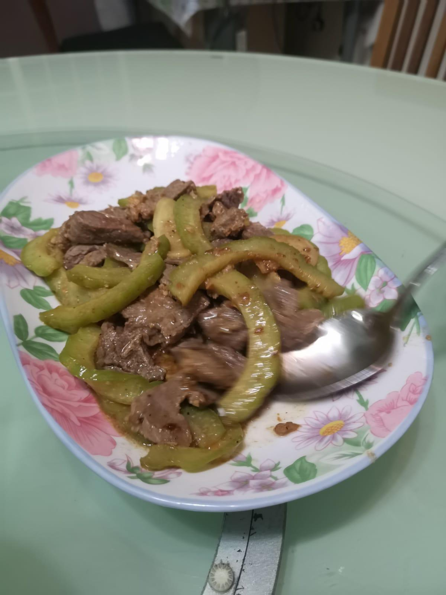
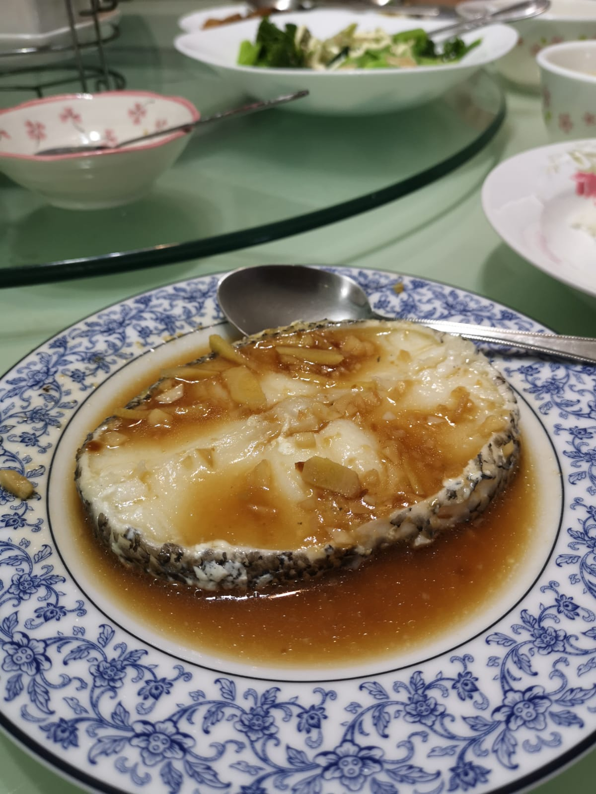

to my dearest mother,

i thought hard about what to do for Mother's Day this year with the time i was left with outside of NS. Last year, I remembered you telling me not to get you flowers because it was a waste of money and since I had the business taken away from me,
giving you flowers wasn't an option this year. How should I express my love for you this year? I thought to myself if I should order in Crabs for dinner, but after the spending $300 on the crabs and having a scrumptious meal, what would I have
achieved? Nothing will change. So this year I want to express my love for you by showing you that I am willing to change for you (for the better) You know how much I hate coding and to involve myself with anything so technical, I paid for a
coding course and spent the past 2 weeks learning basic programming languages such as HTML and CSS to code this website for you. Once again don't worry mom, no one can view this except for you and I. As I am coding this website, i've shed so many
tears so you don't have to, but if you absolutely must, I cannot stop you. Happy Mother's Day, I love you.
here's a reminder on the 5 reasons why I love you
the number of reasons aern't limited to the 5, i owe my whole life to you
- You make me a better version of myself - by setting a good example for all of us, you keep my values in check and ensure we don't stray off. By leading with example, you not only talk the talk but walk the talk as well. For that, I love you.
- You've given up you whole life for me - by giving up your career to guide us on the right path from sacrificing your personal needs to ensure that we have more than enough for myself. Shame on me how I dare use your occupation as a housewife
against you. I'll forever regret those words that came out of my mouth. For sacrificing your entire life for us, I love you
- You are an amazing cook - Contrary to what Ang Lay Hwa has to say, you've been pretty experimental with your cooking style, below are the list of your cooks which I enjoy the most (hope you now understand why i'm always taking pictures of
your cooks) - For always preparing scrumptious meals, I love you
- 
- 
- My favourite of them all: Baked Rosemary chicken
- You give me everything without asking for anything in return - When I came home from work, wished you Happy Mother's Day and went straight to my room, never have you expected anything in return from us but for us to grow up the right way. For
always being the sole giver and never asking to be the receiver, I love you.
- For being a listener - Everybody wants to talk in this world, everybody wants to raise their voice louder than their peers and nobody wants to listen. You're always there to listen to my crazy ideas from selling in-game currency to my
relationship with Cal - For being such a good listener and giving good advice, I love you.
your greatest strengths (ranked from 1 to 10)
| Paperwork & Administrative issues |
👍👍👍👍👍 |
| Getting a degree in a local University |
👍👍👍👍👍 |
| Making Avocado Sandwich |
👍👍👍👍👍 |
| Home Fix DIY (Handy Woman) |
👍👍👍👍 |
| Reducing food wastage |
👍👍👍👍 |
|
| Reminding us to bring our plates to the back |
👍👍👍 |
| Coaching Cai yee with her studies |
👍👍👍 |
| Microsoft excel |
👍👍 |
| Asking Cai yee to put her handphone down and study |
👍 |
| Keeping your cool when you found out that Ong Wee Kiat told his mother everything |
👍 |
|
CLICK ON ME WHEN YOU'VE REACHED THE END